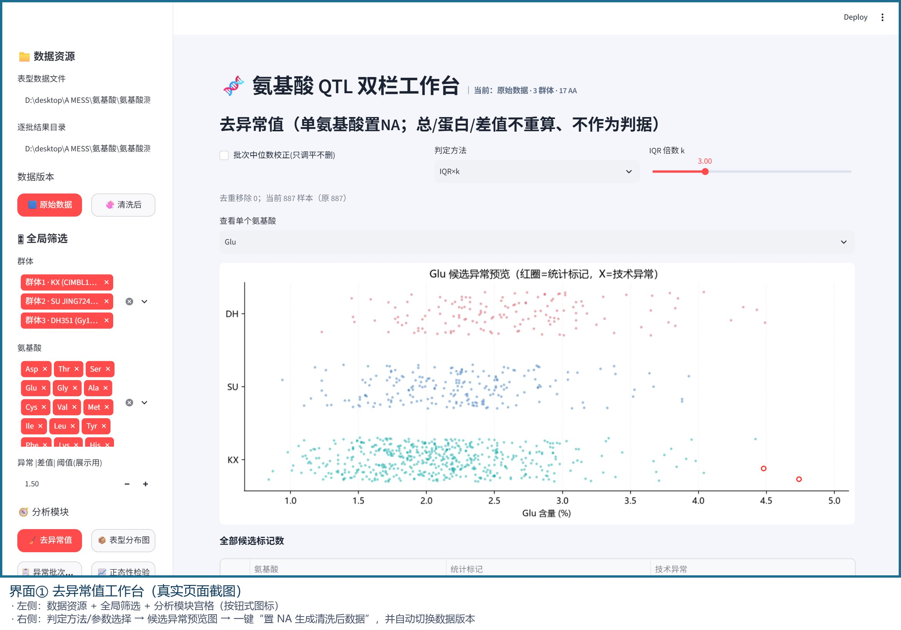
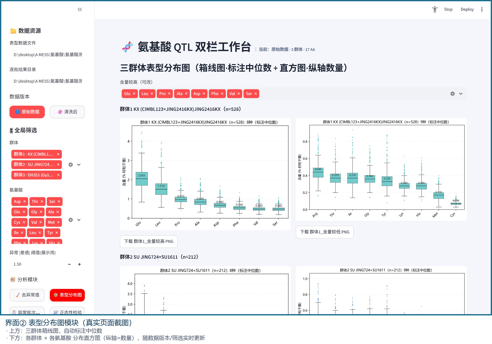
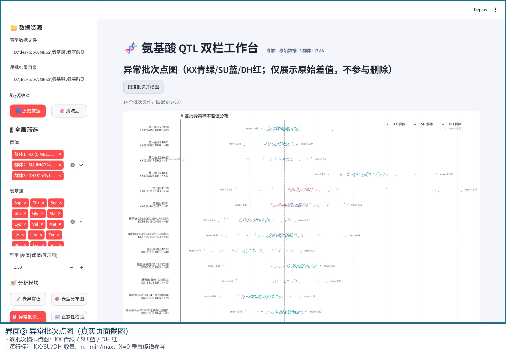

左边配置数据与筛选，右边交互分析——从去异常值到 QTL 定位，一条流水线全在一个页面里完成。

从 7 批次、3 群体的原始 Excel 出发。每一条清洗规则，都对应一个真实的数据问题。
| 数据问题 | 我的处理方法 |
|---|---|
| 同一编号多批重复检测 | 批次优先级去重，保留最新批次结果 |
| 检测批次间存在系统偏移 | 批次中位数校正（只调平不删除，不污染原始数据） |
| 仪器读数明显离群（技术异常） | 区分「技术异常」与「统计标记」两类判据，分别标注 |
| 个体值偏离群体分布 | IQR×k / MAD×m / 分位数三选一，阈值可交互调整 |
| 样本量大、肉眼无法排查 | 交互散点：悬停即看「编号+群体+批次+值+判据」 |
所有清洗动作只生成「清洗后」版本副本，可随时一键恢复原始；手动剔除支持文本框批量粘贴 + 多选，剔除前先给明确提示。对科研数据，可逆性比效率更重要。


这不是一个「演示用」平台——它跑出了写入研究结论的发现。
Chr1:48829319 是 SU 群体氨基酸族的「一因多效」主效位点——同一区段同时影响多个氨基酸含量。
KX 群体主效蛋白 QTL 区段 qHPCJJ1a 与 5 种人体必需/半必需氨基酸共定位，提示该区段间接调控氨基酸含量。
| 原始数据不可变 | 清洗只生成副本 + 一键恢复；手动剔除可逆，绝不覆盖源文件 |
| 分层缓存 | Streamlit cache_data 分层缓存加载与计算，大数据量下不反复重算 |
| 双判据分离 | 「技术异常」与「统计标记」分开标注，科研上不能混为一谈 |
| UI 与算法解耦 | QTL 定位核心独立为 pipeline_qtl.py，纯函数可独立测试 |
| 可导出 | 清洗后 CSV / 图表 PNG 一键下载，结果能离开平台继续用 |
Python · Streamlit（多页工作台框架） · pandas / numpy（数据清洗与计算） · SciPy（统计检验） · Matplotlib / Plotly（静态与交互可视化） · R/qtl（QTL 定位内核） · Excel 批量解析。总计约 1600 行 Python。